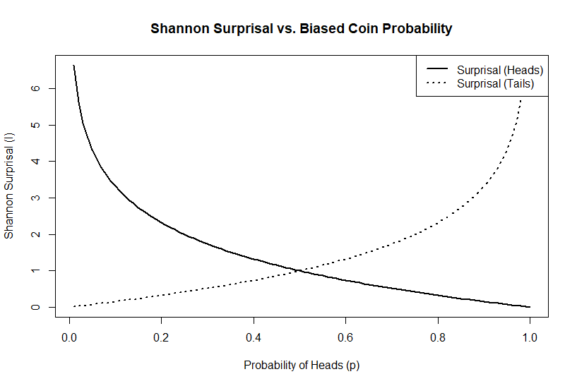
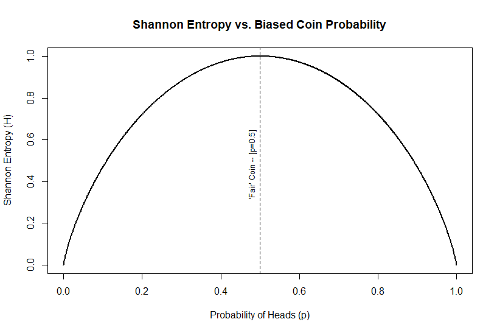
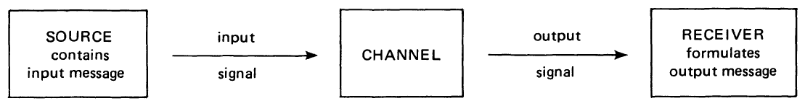

Why is there Math in my Archaeology?
Introduction
Fifty years ago, what arguably could have been one of the most important papers written for modern work in quantitative archaeology was published in American Antiquity. Unfortunately for its author, and generations of archaeologists, it received relatively little attention at the time. With few citations, more than half of which have occurred in just the last few years, its elegance and mathematical precision went largely unappreciated.
John Justeson’s article “Limitations of archaeological inference: an information-theoretic approach with applications in methodology” (1973) was rather ambitious, as can be seen from its abstract:
“A framework is established for the application of information-theoretic concepts to the study of archaeological inference, ultimately to provide an estimate of the degree to which archaeologists, or anthropologists in general, can provide legitimate answers to the questions they investigate. Particular information-theoretic measures are applied to the design elements on the ceramics of a southwestern pueblo to show the methodological utility of information theory in helping to reach closer to that limit.” (Justeson 1973)
The premise was actually quite straightforward – behavioral information is “encoded” in the material artifacts deposited within an archaeological site, and the archaeologist’s goal is to “decode” that information on the other end. The novelty was that John saw this “encoding-decoding” process as an information flow that could be described by what was (at the time) a relatively esoteric set of mathematical tools known as information theory.
The foundations of information theory were developed by Claude Shannon as a way to analyze the transmission of information independently of the content of a message.
“The fundamental problem of communication is that of reproducing at one point either exactly or approximately a message selected at another point. Frequently the messages have meaning; that is they refer to or are correlated according to some system with certain physical or conceptual entities.” (Shannon 1948, 1)
Justeson saw that this approach might also be used to establish an “upper limit” for how interpretable archaeological data could be. Moreover, he demonstrated that we could reasonably calculate a quantifiable measurement for that upper limit form those data.
“If the empirically measured parameters are not consistent with the relationship between them that is required by the theory for a given material or behavioral system, then the data by which that system is to be interpreted cannot have a consistent susceptibility to decoding; that is, there will be no basis for deriving a coherent archaeological interpretation of the data that will accurately reflect the prehistoric situation.” (Justeson 1973, 136)
In other words, observed archaeological features or attributes should represent a coherent and systematic pattern of activities.
In particular, he was addressing two inherent limitations of the archaeological record:
- limitations imposed by the degree of preservation of culturally significant remains and by the skewing of their relationships through time until their recovery; and
- limitations on the interpretability of archaeological data for the cultural descriptions.
The first limitation is analogous degradation of a signal due to noise or interference affecting a transmission, and the second to the encoding and decoding of that signal between sender and receiver.
Schiffer (1972) had previously elaborated on the distinction between systemic and archaeological contexts, differentiating between the cultural and taphonomic processes that create the observable archaeological record. It would not be until a decade later (Schiffer 1983, 1987) that he would formalize these as natural versus cultural transformation processes (i.e., \(n\)-transforms and \(c\)-transforms). Justeson (1973) …
A Gentle Introduction to Information Theory
What is now known as Information Theory largely began with a seminal paper written by Claude Shannon, titled “A Mathematical Theory of Communication” (1948) resulting from his work in cryptography at Bell Labs. At the heart of Shannon’s theory was the idea that information is fundamentally tied to the reduction of uncertainty. Shannon approached information not in terms of meaning, but as a measure of the reduction of uncertainty within a system of communication.
Specifically, he proposed a particular relationship between information and uncertainty in terms of statistical probabilities. He derived a quantitative measure of that uncertainty derived from the concept of entropy used to describe disorder in the thermodynamics of physical systems. Shannon, however, repurposed entropy to refer to the average uncertainty contained in a system given by the equation:
\[ H(\cal{X}) = - \sum_{i=1}^{n} p(x_i) \ \log_2 \ p(x_i) \]
What this equation is describing is the total entropy \(H\) of some system \(\cal{X}\) that contains \(n\) discrete attributes or elements \((x_{1}, x_{2}, \ldots x_{n})\). This is defined as the negative sum over all features of each element’s probability of occurrence \(p(x_i)\) times the \(\log_2\)1 of that probability.
The higher the entropy of a system, indicated by a higher value of \(H\), the more uncertainty or randomness there is to the elements of \(\cal{X}\). Somewhat counterintuitively, the more uncertain or random a system the more information it conveys. Remember that Shannon defines information as the reduction of uncertainty. The greater the uncertainty (i.e., high entropy), the more potential information the system is capable of producing because there is more uncertainty to reduce.
To see how, we need to understand what Shannon defined as surprisal. Surprisal, also known as self-information, is a measure of how surprising or unexpected a specific event is based on its probability. In essence, surprisal measures the information content of a specific outcome – i.e., rare events carry more information than common ones because they are less expected. Low probability events, those that occur infrequently, are highly surprising. Conversely, high probability events are not.
Consider it this way – if an event is nearly certain to occur, you would already be expecting it to happen when it does. Its occurrence tells you nothing that you did not already know. It is only when something happens that we did not expect (i.e., we are surprised) that it is providing new information. Therefore, surprisal (denoted as \(I(x)\)) is the potential information contained in a single event based on its probability \(p(x)\):
\[ I(x) = - \log_2 p(x) \]
Surprisal is zero for events that are certain (i.e., the probability \(p(x)=1\)), and grows larger as the probability of the event decreases (Figure {#figure:surprisal_example}). Exceedingly rare events, by contrast, would be very surprising to witness and approaching “infinitely” surprising as the probability of the event goes to zero (i.e., \(lim_{p(x) \to 0} \ I(x) = \infty\)).

Entropy represents the average surprisal over all possible outcomes from a probability distribution. It quantifies the overall uncertainty or unpredictability of a system or source of information. The higher the entropy, the more information the system is capable of producing, since there is greater uncertainty about which outcome will occur.
Entropy is highest when all outcomes are equally likely, and decreases as we gain more information to anticipate whether or not that event is likely to occur (Figure {#figure:entropy_example}). Information is therefore the reduction of that uncertainty or entropy when a new event is observed. We have learned more about the underlying probabilities for future events.

For the first time, scientists had a way to quantify information. Shannon had defined information in a way that made it possible to measure and analyze it mathematically, based solely on its statistical structure and independently of its content or meaning.
Information Theory in Archaeology
Channels, Classification, and Signal

\[ \biggl \lbrace (u_1, A_1), \ldots, (u_N, A_N) \biggr \rbrace \]
\[ P \big \lbrace v(u_i) \in A_i \big \rbrace \geqslant 1 - \lambda, i=1, \ldots,N \]
\[ C = \max_{\pi} \left\lbrace \sum_j \left\lbrack\sum_i \pi_i w(j|i) \log_2 \sum_i \pi_i w(j|i) - \sum_i \pi_i w(j|i) \log_2 \sum_i \pi_i w(j|i)\right\rbrack \right\rbrace \]
Applications
Extrapolation of the Prehistoric Distribution of Design Elements
\[ M_t = \sum^{T}_{i=t} N_i \]
\[ L_t = \sum^{T}_{i=t} M_i \]
Noise
\[ \begin{aligned} \psi(r) &= P(\text{receiving design element r given that r was sent})\\ &=P(\text{receiving r} \ | \ \text{r was sent}) \end{aligned} \]
\[ \begin{aligned} P(A|B) = &P(A \ \text{and} \ B) \div P(B) \text{, so} \\ &P(\text{r sent} \ | \ \text{r received}) \cdot P(\text{r received})\\ = &P(\text{r sent and r received})\\ = &P(\text{r received} \ | \ \text{r sent}) \cdot P(\text{r sent}) \\ \end{aligned} \]
\[ \begin{aligned} \min_r \psi(r) &= \min_r P(\text{r received} \ | \ \text{r sent}) \\ &= \min_r 1 - P(\text{r not received} \ | \ \text{r sent}) \\ &= \max_r P(\text{r not received} \ | \ \text{r sent}) \\ &= 1- \lambda \end{aligned} \]
\[ \begin{aligned} \overline{\psi} &= \sum_r p_E(r) \psi(r) \\ &= \sum_r p_E(r) \left \lbrack p(r) \div p_E(r) \right \rbrack \\ &= \sum_r p(r) = 1 \end{aligned} \]
\[ \begin{aligned} H' &= -\sum_{i=1}^k p(x_i) \log_2 p(x_i) \\ &= -\sum_{i=1}^k \frac{1}{k} \log_2 \frac{1}{k} \\ &= -\log_2 \frac{1}{k} \\ &= \log_2 k \end{aligned} \]
\[ h = H/H' \ \text{and} \ h_E = H_E/H'_E \]
References Cited
Footnotes
\(\log_2\) refers to the base-2 logarithm.↩︎